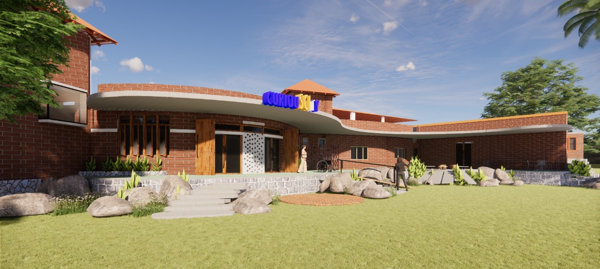
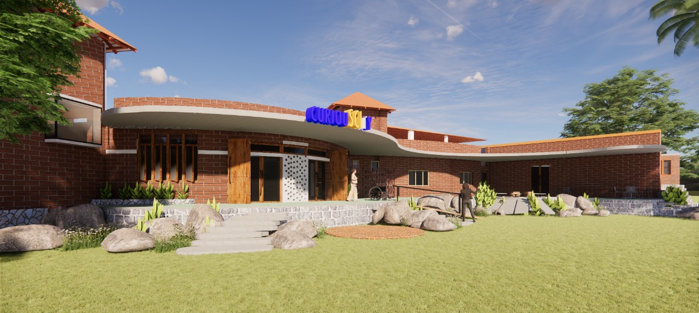

"Wisdom begins in Wonder"
Our Discovery Centre aspires to be a vibrant, inclusive, public space of STEM learning for children, teachers and the community across all strata of society.

Curiouscity was founded in 2009 by Dr. Shonali Chinniah, Dr. Jandeep Banga, and Umesh Malhotra. Dr. Sukanya Sinha and Dr. Utpal Chattopadhayay joined us shortly afterwards.Umesh Malhotra was the driving force behind our ideas and our company.
Here at Curiouscity, we measure our success by the questions we inspire in children. We firmly believe that when a child is interested enough to ask a question, they are engaged and thinking about the subject material presented. Irrespective of how trivial the question is, if it is important to the child, it is important to us.
Booyaya
I enjoyed all the classes a lot. In all the other science classes, the teachers were very boring and put me to sleep saying long scientific exclamations that sounded (Blah Blah Blah) x 100 but this science class was amazing and we could do the stuff you guys do.
- Aditya (age 9)
It was just excellent! All the experiments were very simple and was connected to their syllabus also. It will help them understand the concepts as they have experienced it. Thank you
- Jyotsana (teacher)
Avanti looked forward to each class, preparing herself in advance to get the most. She actually benefited most by the passion and understanding of the instructors; something which she hadn’t seen in the school. She developed an understanding of fundamental concepts, which she could not get as neatly through her text books earlier. Congrats for being able to give them a taste of scientific temperament, which may change their direction and approach in life.
- Mohan (parent)
"In a world where kids are increasingly bogged down by mugging facts and swimming through a swarm of data, Curiouscity, a Bengaluru-based organisation has been getting children to work with their hands and minds, put some thought into the science they learn, and supplement conventional structured learning with seamless experiments. And in the process, get them to lose their fear of science, and begin loving it."
Full article >>"You might want to consider the method adopted by Shonali Chinniah and her associates at Curiouscity when they attempt to unravel the physics behind pendulums to kids: they suspend a bucket using 20 feet of rope from a tree and let it swing away. Later, they hand out potatoes of various shapes and sizes to the children and ask them to replicate the exercise, thereby demonstrating that [the pendulum's mass] indeed has no effect on [its time period]. 'We teach children how to observe, explore and come to their own conclusions after an experiment is conducted,' said Chinniah."
Full article >>We discovered all about grounding one day: we tried to create a human chain battery on the kids say so, and discovered that if a kid broke the circle and was standing on a carpet, the electricity did not pass through, and if they were standing on the ground and did the same the electricity did pass through. We were very excited, since we serendepitiously hit upon the concept of grounding when we did this spur of the moment exercise using a penny, a nail, a voltmeter, and a bunch of kids. This all heppened because one kid asked if blood would be a better conductor of electricity, as his lemon battery wasn’t working too well, and couldn’t light the light bulb. He reasoned that he once got a shock and therefore his blood must be a good conductor of electricity.
When Nima was running a session and we pointed out how different colours race across the paper at different speeds depending on a) their affinity to the paper, b) their affinity to the water, one little girl wanted to know what would happen if we turned the chromatograph paper the other way around. “Will the red still win the race?” It was lovely considering that no kid had thought to ask this in the many sessions we’d held thus far. We dried out the paper and turned the chromatograph upside down and showed them how the colours race back... ofcourse the red would only have a chance to win again if it had enough time and place to run the race backwards.
More Questions >>